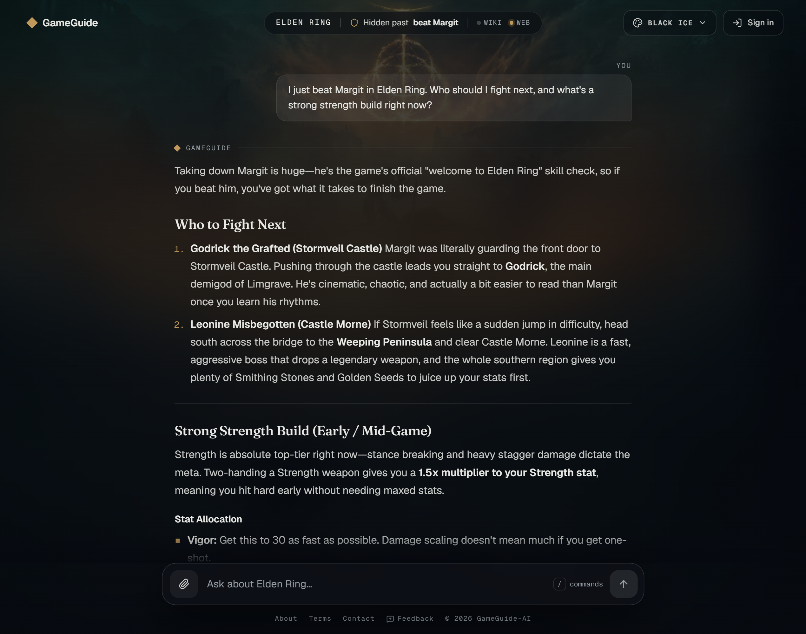
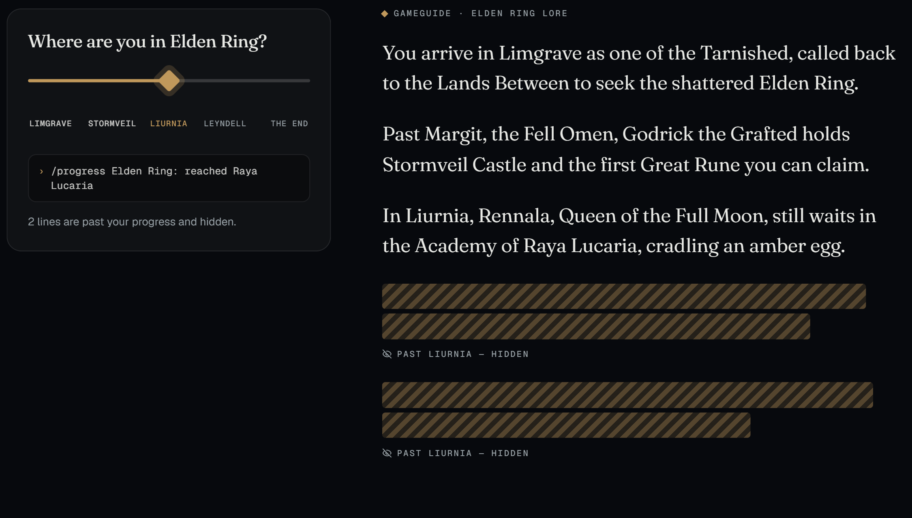
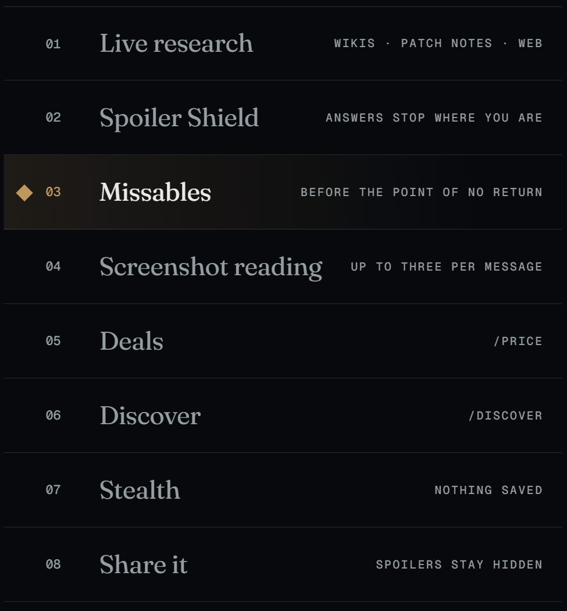
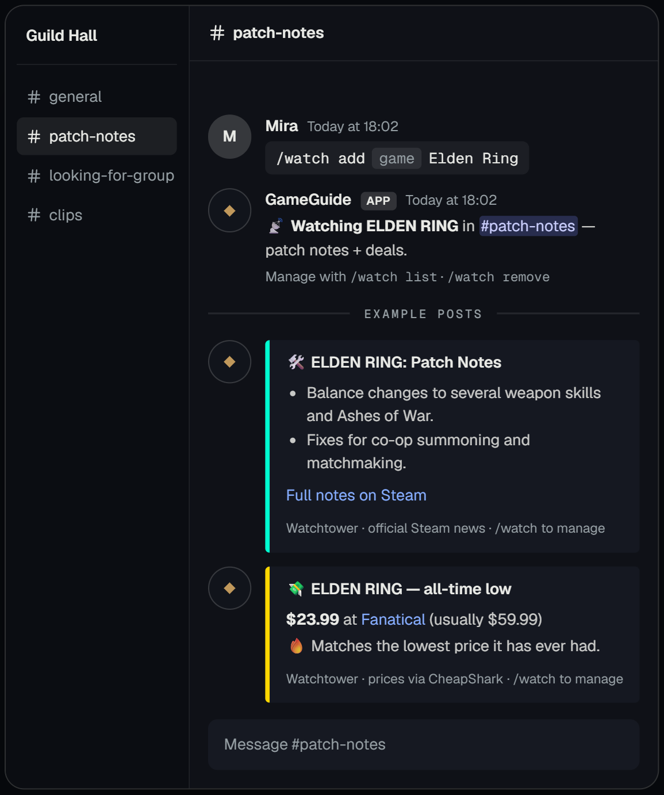
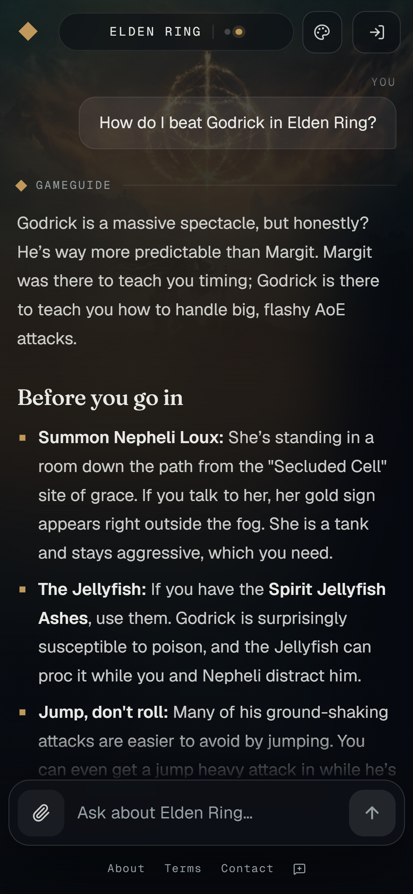

Tell it where you are. Ask anything — bosses, builds, what you can still miss. It researches live and stops at your progress.

Say “I just beat Margit.” Story answers stay on your side of that line — anything past it waits under a bar until you choose to look.

Wikis, official patch notes and web search are read when you ask — so it follows the current patch, and shows its sources.
Type a slash command or just ask.

Slash commands or an @mention for the same spoiler-safe answers. Watchtower posts a game's patch notes — summarised — and its big deals into a channel.

Add it to your phone's home screen. Answers are laid out for a phone propped next to the TV.
